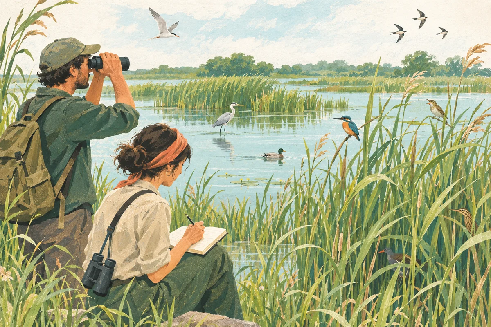

Environmental measurement
More birds, or more birdwatchers?
A longer species list can reflect more watching. How can we recover what early visits missed?

Repeat-visit correction reduced measurement error by 33.7% against later, fuller records in a held-out-city validation.